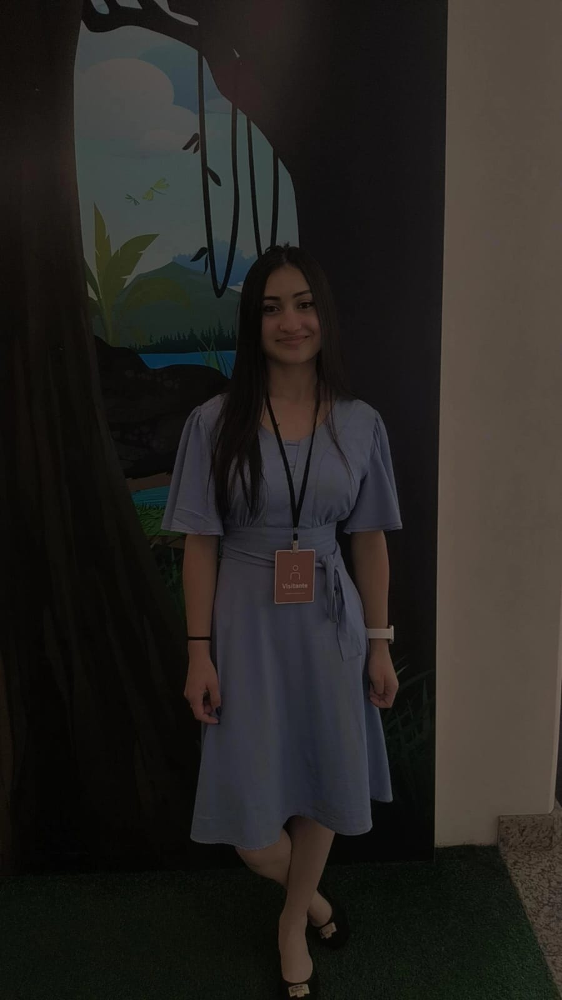

Meu portfólio
Este site apresenta minha formação, conhecimentos, projetos e atividades desenvolvidas durante minha trajetória na área de tecnologia.
Desenvolvedora em Formação

Olá, meu nome é Letícia Toledo e sou estudante de Análise e Desenvolvimento de Sistemas. Sou apaixonada por tecnologia e estou sempre em busca de aprender coisas novas.
Este site apresenta minha formação, conhecimentos, projetos e atividades desenvolvidas durante minha trajetória na área de tecnologia.